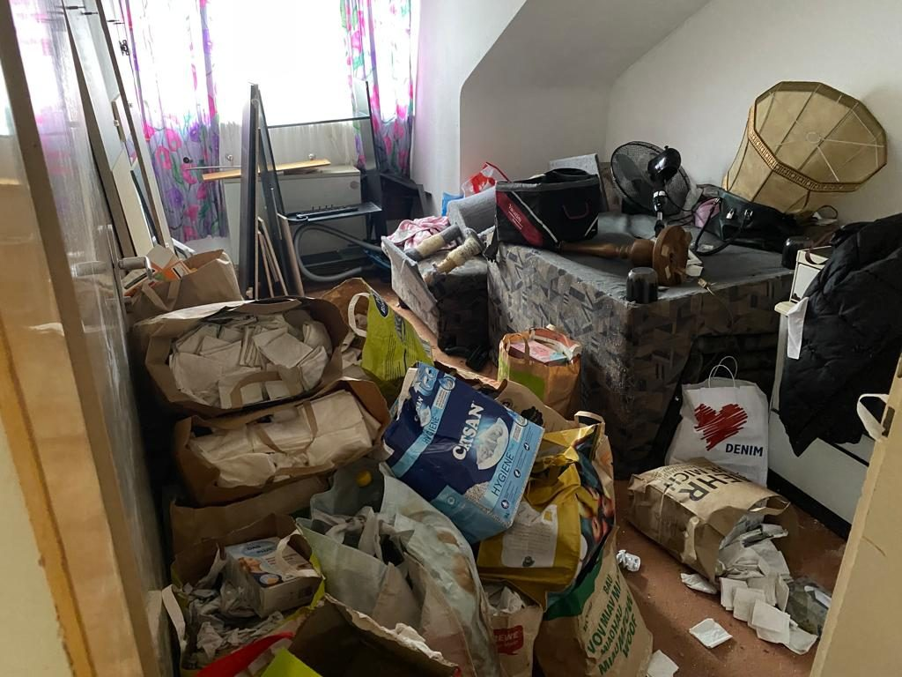

Ratgeber Haushaltsauflösung
Wohnung nach einem Todesfall auflösen: Was in Hamburg zu tun ist
Ein Angehöriger ist gestorben und seine Wohnung muss geräumt werden? Neben der Trauer kommen dann Fristen, Mietvertrag und viele Fragen. Hier lesen Sie, in welcher Reihenfolge Sie am besten vorgehen, welche Fristen das Gesetz setzt und wie Sie den Hausrat in Hamburg loswerden.
Kurz gesagt: die wichtigsten Schritte
- Nichts überstürzen: Erst klären, wer erbt und ob das Erbe angenommen wird. Dann erst ausräumen.
- Papiere sichern: Testament, Verträge, Kontoauszüge, Versicherungen und Schlüssel heraussuchen, bevor etwas weggeworfen wird.
- Mietvertrag prüfen: Bei einer Mietwohnung gilt für die Kündigung durch die Erben eine Frist von einem Monat (§ 564 BGB).
- Aufteilen: Mit allen Erben festlegen, was behalten, verschenkt oder verkauft wird.
- Rest räumen lassen: Was übrig bleibt, holt die Stadtreinigung als Sperrmüll ab oder eine Entrümpelungsfirma räumt alles auf einmal.
Erst klären, wer erbt
Ausräumen darf, wer erbt. Gibt es mehrere Erben, sollten alle einverstanden sein, bevor Möbel, Schmuck oder Bilder die Wohnung verlassen. Das vermeidet später Streit.
Wer überlegt, das Erbe auszuschlagen, etwa weil Schulden vermutet werden, sollte mit dem Ausräumen warten. Die Ausschlagung muss laut Verbraucherzentrale innerhalb von 6 Wochen erklärt werden, nachdem man von der Erbschaft erfahren hat. Zuständig ist das Nachlassgericht, also das Amtsgericht am letzten Wohnsitz des Verstorbenen oder am eigenen Wohnsitz. Ein einfacher Brief reicht dafür nicht, die Erklärung muss beim Gericht abgegeben oder notariell beglaubigt werden. Wer schon Dinge aus dem Nachlass mitgenommen hat und dann ausschlägt, muss sie zurückgeben. In diesem Fall lassen Sie sich vorher rechtlich beraten.
Testament gefunden? Ab zum Nachlassgericht
Taucht beim Sortieren ein handschriftliches Testament auf, darf es nicht in der Schublade bleiben. Nach § 2259 BGB muss jeder, der ein solches Testament besitzt, es unverzüglich beim Nachlassgericht abliefern, sobald er vom Tod weiß. Das gilt auch, wenn Sie meinen, dass es für Sie ungünstig ist.
Gehen Sie deshalb Schreibtisch, Schränke und Ordner selbst durch, bevor geräumt wird. Legen Sie Ausweise, Bankunterlagen, Versicherungspolicen, Verträge, Fotos und Erinnerungsstücke beiseite. Erst danach sollte der Rest raus.
Mietwohnung: Kündigung und Fristen
Mit dem Tod endet ein Mietvertrag nicht von selbst. Haben Ehepartner, Lebenspartner, Kinder oder andere Angehörige in der Wohnung mitgewohnt, können sie in den Vertrag eintreten (§ 563 BGB). Tut das niemand, geht der Mietvertrag auf die Erben über (§ 564 BGB).
Die Erben und auch der Vermieter dürfen dann außerordentlich kündigen. Das muss innerhalb eines Monats geschehen, nachdem sie vom Tod erfahren haben und wissen, dass niemand eintritt. Es gilt die gesetzliche Frist nach § 573d BGB: Geht die Kündigung spätestens am dritten Werktag eines Monats ein, endet der Vertrag zum Ende des übernächsten Monats. Beispiel: Kündigung bis zum dritten Werktag im März, Ende des Mietverhältnisses am 31. Mai.
Bis dahin läuft die Miete weiter. Planen Sie die Räumung deshalb so, dass die Wohnung rechtzeitig zur Übergabe leer ist. Was der Mietvertrag für die Rückgabe vorsieht, gilt auch für die Erben.
Wohin mit dem Hausrat in Hamburg?
- Behalten und verteilen: Was Angehörige möchten, holen sie zuerst ab. Kleben Sie Zettel mit Namen an die Stücke.
- Verkaufen oder verschenken: Gut erhaltene Möbel finden über Kleinanzeigen oder soziale Kaufhäuser oft neue Besitzer. Das braucht aber Zeit.
- Sperrmüll: Die Stadtreinigung Hamburg holt sperrige Möbel gegen Gebühr ab. Laut hamburg.de kostet das 35 Euro für bis zu 8 m³ und 5 Euro für jeden weiteren angefangenen Kubikmeter (Stand Oktober 2026). Kartons, gefüllte Säcke und Kleinkram nimmt sie dabei nicht mit.
- Recyclinghof: Elektrogeräte geben Privatleute dort kostenlos ab. Dafür braucht es aber ein Auto und mehrere Fahrten.
- Entrümpelung: Ist die Wohnung voll, liegt sie im oberen Stock oder drängt der Übergabetermin, räumt eine Firma alles in einem Rutsch.
So räumen wir eine Wohnung nach einem Todesfall
T&A Abriss, Rückbau & Entrümpelung löst Wohnungen und Häuser in Hamburg und im Umland auf. Wir räumen selbst und vermitteln nicht weiter.
- Fotos oder Video: Für eine erste Einschätzung reichen ein paar Bilder der Räume. Wer nicht in Hamburg wohnt, zeigt uns die Wohnung auch per Videoanruf.
- Kostenlose Besichtigung: Wir sehen uns Menge, Stockwerk und Weg zum Fahrzeug an.
- Festpreis: Sie bekommen einen festen Preis. Abtransport und Entsorgung sind darin enthalten.
- Räumen: Was bleiben soll, markieren Sie vorher. Alles andere tragen wir heraus und trennen es nach Sorten.
- Übergabe: Die Räume sind danach leer und besenrein, bereit für den Termin mit dem Vermieter oder Makler.
Richtpreise für Wohnungen und Häuser finden Sie auf der Seite Entrümpelung Hamburg. Soll danach noch der Boden raus oder das Bad erneuert werden, übernehmen wir das als Entkernung.
Quellen
- Gesetze im Internet: § 564 BGB – Fortsetzung des Mietverhältnisses mit dem Erben, außerordentliche Kündigung (1 Monat)gesetze-im-internet.de
- Gesetze im Internet: § 573d BGB – Außerordentliche Kündigung mit gesetzlicher Frist (3. Werktag, Ablauf des übernächsten Monats)gesetze-im-internet.de
- Gesetze im Internet: § 2259 BGB – Ablieferungspflicht für Testamentegesetze-im-internet.de
- Verbraucherzentrale: Erbe ausschlagen – das müssen Sie wissen (6 Wochen, Nachlassgericht, Rückgabe entnommener Gegenstände; Stand 13.01.2025)verbraucherzentrale.de
- hamburg.de: Sperrmüll entsorgen – Stadtreinigung Hamburg (35 € bis 8 m³, 5 € je weiterem m³; Stand 25.10.2026)hamburg.de
- hamburg.de: Recyclinghöfe der Stadtreinigung Hamburg (Elektroschrott kostenfrei)hamburg.de
Diese Übersicht ersetzt keine Rechtsberatung. Im Zweifel fragen Sie bei der zuständigen Stelle nach, etwa beim Bezirksamt oder bei der Stadtreinigung.
Häufige Fragen
Fragen und Antworten
Wie schnell muss die Wohnung eines Verstorbenen geräumt werden?
Das hängt vom Ende des Mietvertrags ab. Erben können innerhalb eines Monats nach Kenntnis vom Tod außerordentlich kündigen (§ 564 BGB). Mit der gesetzlichen Frist endet der Vertrag dann meist nach knapp drei Monaten. Bis zur Übergabe sollte die Wohnung leer sein.
Darf ich die Wohnung räumen, wenn ich das Erbe vielleicht ausschlage?
Warten Sie damit lieber. Die Ausschlagung muss innerhalb von 6 Wochen beim Nachlassgericht erklärt werden. Wer schon Dinge aus dem Nachlass genommen hat, muss sie bei einer Ausschlagung zurückgeben. Lassen Sie sich im Zweifel rechtlich beraten.
Was mache ich mit einem Testament, das ich beim Ausräumen finde?
Sie müssen es unverzüglich beim Nachlassgericht abliefern (§ 2259 BGB). Das gilt für jedes Testament, das nicht schon amtlich verwahrt ist.
Kann ich die Wohnungsauflösung organisieren, wenn ich nicht in Hamburg wohne?
Ja. Die Besichtigung geht auch per Videoanruf, den Festpreis bekommen Sie schriftlich.
Räumen Sie auch ein ganzes Haus mit Keller und Dachboden?
Ja. Wir räumen Wohnungen und ganze Häuser, auch Keller, Dachboden, Garage und Garten. Den Preis gibt es nach der kostenlosen Besichtigung als Festpreis.
Kontakt
Besichtigung anfragen
Kostenlos und unverbindlich, vor Ort oder per Video. Wir melden uns innerhalb eines Werktags.
Eine Anfrage für alles: Kreuzen Sie einfach alle Arbeiten an.